Masala Dosa Recipe
One of my all time favourite dish is Masala Dosa.
 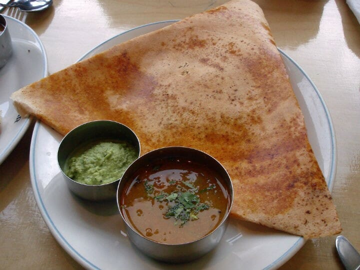
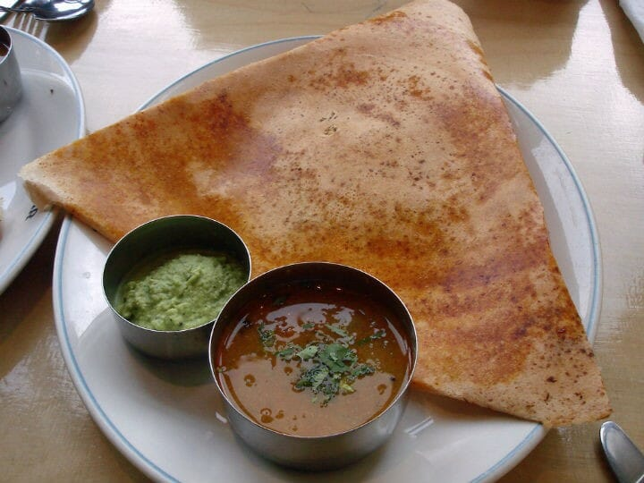
Masala Dosa is a popular South Indian breakfast where a crispy crepe made of fermented rice and lentil batter is served with flavorful spiced potato curry. Most South Indian households make dosas regularly and each home make in their own variety. It tastes best when served with chutneys and sambar. It can also be found in other parts of the country. Making a home style masala dosa is super simple and you even don't need chutneys and sambar as the potato masala stuffing is good enough.
Preparation time
=20 minutes
Cooking time
=45 minutes
Servings
=4 serves(8 dosas)
Ingredients |
Weightage |
| Long grain rice | 2 cups |
| Urad dal | 1 cup |
| Water | As required |
| Onion(chopped) | 1 medium size |
| Green chilies | 2-4 |
| Mustard seeds | 1/2 tsp |
| Cumin seeds | 1/2 tsp |
| Turmeric powder | 1/2 tbsp |
| Potato(boiled) | 2 large size |
| Oil | 2 tbsp |
| Curry leaves | 8-10 |
| Chana dal | 1 tsp |
| Ginger(chopped) | 1/2 inch |
| Coconut(grated) | 1 cup |
| Salt | As required |
Directions
Prepare Dosa Batter:
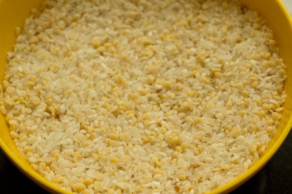
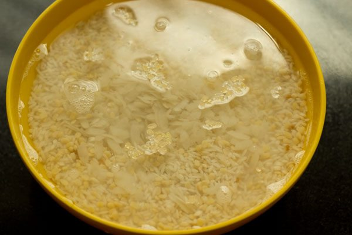
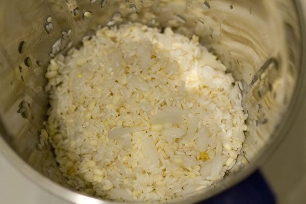
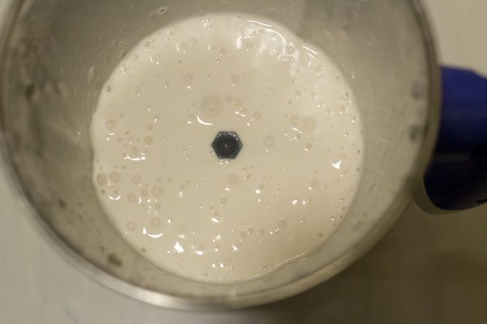
- Soak rice and urad dal in separate bowls for 5-6 hours and then strain.
- Grind the rice and urad dal mixture in a commercial grind and pour water adjusting the consistency.
- Add salt to taste
- Cover the mixture and let it sit overnight for fermentation
Prepare Potato Masala:
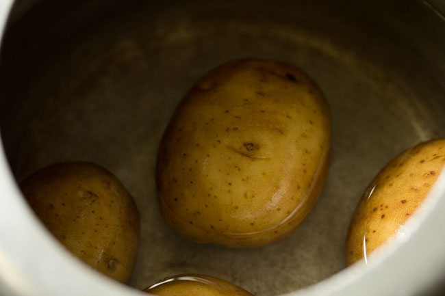
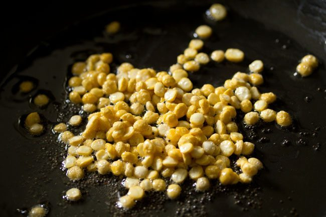
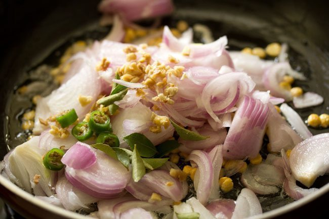
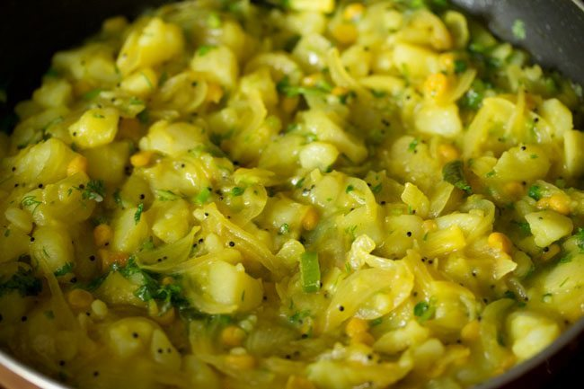
- Boil 2 large potatoes
- Add 2 tbsp of oil in a pan.
- When the oil gets heated, add mustard seeds,chana dal and fry until it turns golden brown .
- Add curry leaves, green chilies and onion
- Sprinkle turmeric powder and salt and stir
- Smash boiled potatoes and add them to your mixture.
- Stir and keep it aside
Prepare Chutney:
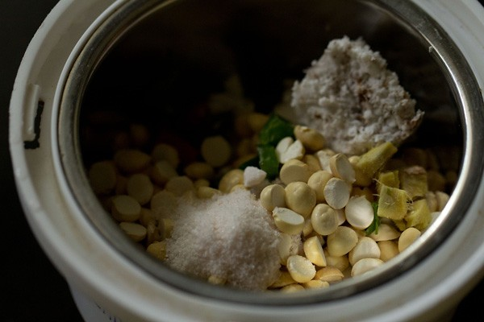
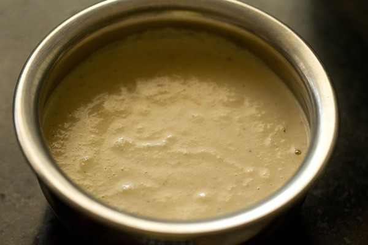
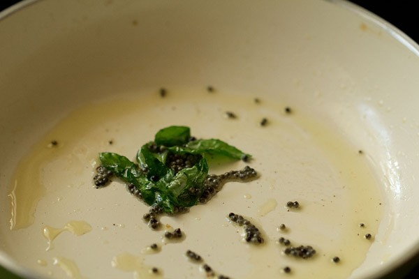
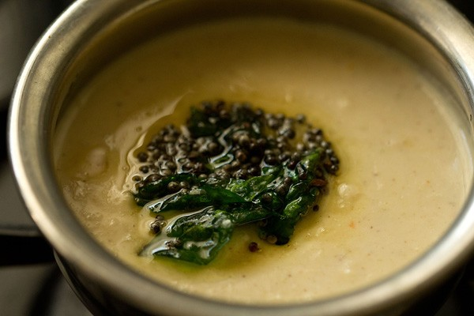
- Take 5 tbsp chana dal, 2 tbsp grated coconut,1 green chilii, ginger and salt as required in a chutney grinder jar.
- Add 4 to 5 tbsp water and grind to a smooth chutney.
- In another small pan heat 1/2 tbsp oil. Add mustard and allow them to crackle.
- Then add the curry leaves.
- Saute till the curry leaves become crisp.
- Pour the entire tempering ingredients along with the hot oil in the chutney.
Prepare Masala Dosa:
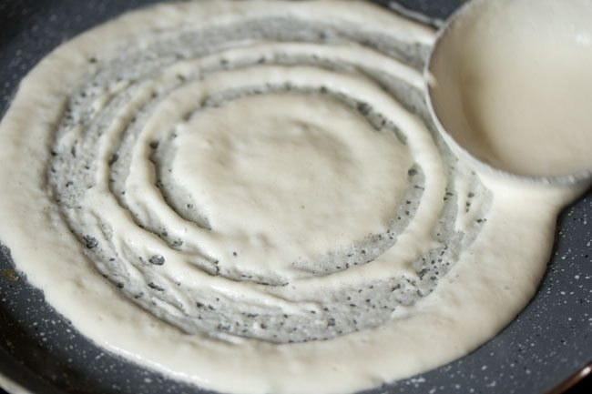
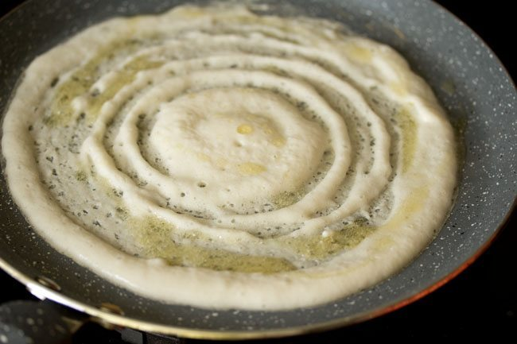
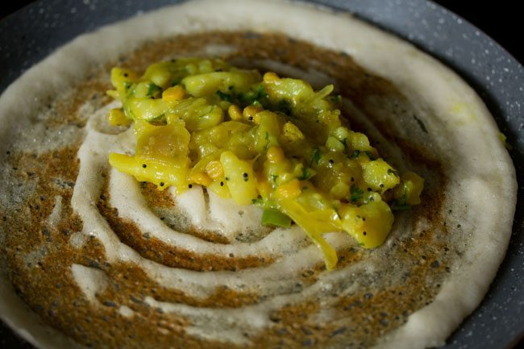
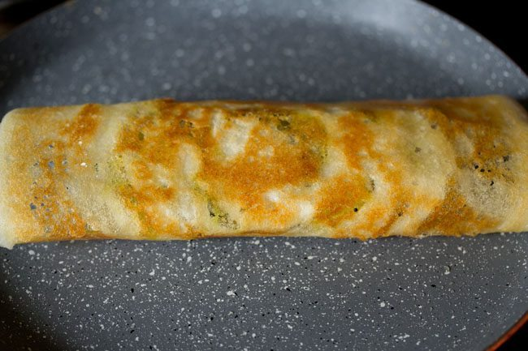
- Heat your dosa tawa or a non-stick pan on a medium heat.
- When the pan is hot enough, pour the batter in the centre of the tawa.
- Immediately spread the batter in circular motion until it reaches the edges of the pan.
- Pour half tsp oil here and there and then put the potato masala at the centre.
- Cook until the base turns golden and crisp.
Now, your tasty masala dosa is ready. Serve it with the chutney and enjoy eating!!!
You can also enjoy eating it with
Coconut Chutney and
Sambar